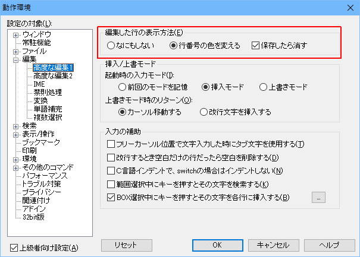
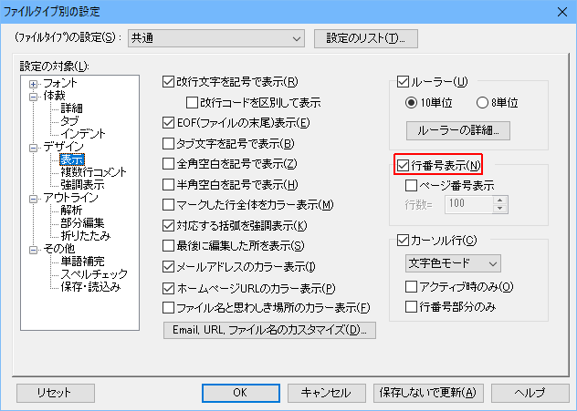
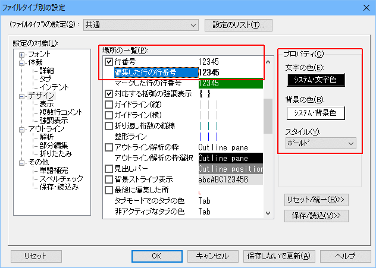
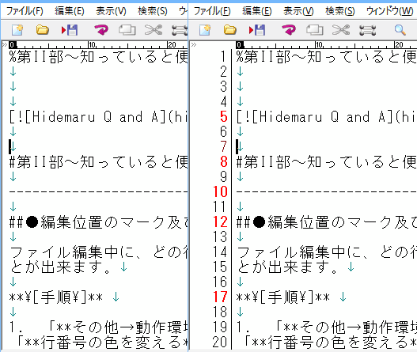
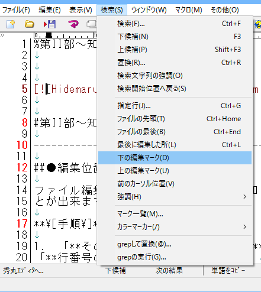

ファイル編集中に、どの行を編集したか知りたい場合は、以下の手順で編集個所を知ることが出来ます。
「その他→動作環境→編集→高度な編集1」にある「編集した行の表示方法」で、「行番号の色を変える」を選択する。

「高度な編集1」が表示されない場合は、「上級者向け設定」にチェックを入れてください。

「その他→ファイルタイプ別の設定→デザイン→表示」の「行番号表示」チェックボックスをＯＮにして下さい。

「その他→ファイルタイプ別の設定→デザイン」の「編集した行の行番号」を選択し、 プロパティで文字色/背景色/スタイルを設定して「ＯＫ」ボタンを押して下さい。 （ここまでで、編集した行番号が設定した状態になります）
2.でONにしたチェックボックスは、デザインにある「行番号」のチェックボックスを操作しても、 同じ結果になります。

設定変更前と、変更後画面です。(設定変更後は、編集行の行番号が赤色)で表示されている。)

「検索→編集マークの上（下）検索」で、編集行に移動することが出来ます。

「検索→編集マークの上（下）検索」を頻繁に使う場合は、「キー割り当て」を使用するといいでしょう。 「キー割り当て」方法は、「[HME0054A]●他のエディタと同じキー操作を再現したい」を参照して下さい。